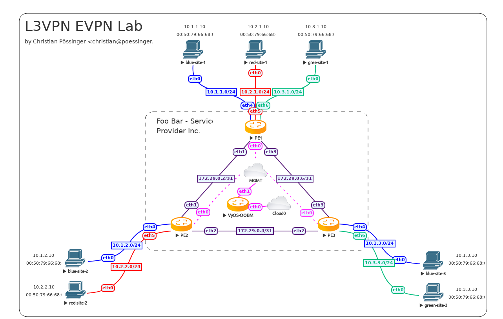

L3VPN EVPN with VyOS
I spun up a new lab in EVE-NG, which represents this as the “Foo Bar - Service Provider Inc.” that has 3 points of presence (PoP) in random datacenters/sites named PE1, PE2, and PE3. Each PoP aggregates at least two customers.
I named the customers blue, red and green which is common practice in VRF (Virtual Routing and Forwarding) documentation scenarios.
PE1 is located in an industrial area that holds multiple office buildings. All customers have a site in this area.
PE2 is located in a smaller area where by coincidence two customers (blue and red) share an office building.
PE3 is located in a smaller area where by coincidence two customers (blue and green) are located.
Management VRF
A brief excursion into VRFs: This has been one of the longest-standing feature requests of VyOS (dating back to 2016) which can be described as “a VLAN for layer 2 is what a VRF is for layer 3”. With VRFs, a router/system can hold multiple, isolated routing tables on the same system. If you wonder what’s the difference between multiple tables that people used for policy-based routing since forever, it’s that a VRF also isolates connected routes rather than just static and dynamically learned routes, so it allows NICs in different VRFs to use conflicting network ranges without issues.
VyOS 1.3 added initial support for VRFs (including IPv4/IPv6 static routing) and VyOS 1.4 now enables full dynamic routing protocol support for OSPF, IS-IS, and BGP for individual VRFs.
The lab I built is using a VRF (called mgmt) to provide out-of-band SSH access to the PE (Provider Edge) routers.
set system host-name PE1
set interfaces ethernet eth0 address 'dhcp'
set interfaces ethernet eth0 description 'out-of-band management'
set interfaces ethernet eth0 vrf 'mgmt'
set service ssh vrf 'mgmt'
set vrf name mgmt table '1000'
Topology
We use the following network topology in this example:
Core network
I chose to run OSPF as the IGP (Interior Gateway Protocol). All required BGP sessions are established via a dummy interfaces (similar to the loopback, but in Linux you can have only one loopback, while there can be many dummy interfaces) on the PE routers. In case of a link failure, traffic is diverted in the other direction in this triangle setup and BGP sessions will not go down. One could even enable BFD (Bidirectional Forwarding Detection) on the links for a faster failover and resilience in the network.
Regular VyOS users will notice that the BGP syntax has changed in VyOS 1.4 from even the prior post about this subject. This is due to T1711, where it was finally decided to get rid of the redundant BGP ASN (Autonomous System Number) specification on the CLI and move it to a single leaf node (set protocols bgp local-as).
It’s important to note that all your existing configurations will be migrated automatically on image upgrade. Nothing to do on your side.
PE1
set interfaces dummy dum0 address '172.29.255.1/32'
set interfaces ethernet eth1 address '172.29.0.2/31'
set interfaces ethernet eth1 description 'link to pe2'
set interfaces ethernet eth1 mtu '1600'
set interfaces ethernet eth3 address '172.29.0.6/31'
set interfaces ethernet eth3 description 'link to pe3'
set interfaces ethernet eth3 mtu '1600'
set protocols ospf area 0 network '172.29.0.2/31'
set protocols ospf area 0 network '172.29.0.6/31'
set protocols ospf interface eth1 network 'point-to-point'
set protocols ospf interface eth3 network 'point-to-point'
set protocols ospf interface eth1 passive disable
set protocols ospf interface eth3 passive disable
set protocols ospf log-adjacency-changes detail
set protocols ospf parameters abr-type 'cisco'
set protocols ospf parameters router-id '172.29.255.1'
set protocols ospf passive-interface 'default'
set protocols ospf redistribute connected
set protocols bgp address-family l2vpn-evpn advertise ipv4 unicast
set protocols bgp address-family l2vpn-evpn advertise-all-vni
set protocols bgp system-as '100'
set protocols bgp neighbor 172.29.255.2 peer-group 'ibgp'
set protocols bgp neighbor 172.29.255.3 peer-group 'ibgp'
set protocols bgp parameters log-neighbor-changes
set protocols bgp parameters router-id '172.29.255.1'
set protocols bgp peer-group ibgp address-family l2vpn-evpn
set protocols bgp peer-group ibgp remote-as '100'
set protocols bgp peer-group ibgp update-source 'dum0'
PE2
set interfaces dummy dum0 address '172.29.255.2/32'
set interfaces ethernet eth1 address '172.29.0.3/31'
set interfaces ethernet eth1 description 'link to pe1'
set interfaces ethernet eth1 mtu '1600'
set interfaces ethernet eth2 address '172.29.0.4/31'
set interfaces ethernet eth2 description 'link to pe3'
set interfaces ethernet eth2 mtu '1600'
set protocols ospf area 0 network '172.29.0.2/31'
set protocols ospf area 0 network '172.29.0.4/31'
set protocols ospf interface eth1 network 'point-to-point'
set protocols ospf interface eth2 network 'point-to-point'
set protocols ospf interface eth1 passive disable
set protocols ospf interface eth2 passive disable
set protocols ospf log-adjacency-changes detail
set protocols ospf parameters abr-type 'cisco'
set protocols ospf parameters router-id '172.29.255.2'
set protocols ospf passive-interface 'default'
set protocols ospf redistribute connected
set protocols bgp address-family l2vpn-evpn advertise ipv4 unicast
set protocols bgp address-family l2vpn-evpn advertise-all-vni
set protocols bgp system-as '100'
set protocols bgp neighbor 172.29.255.1 peer-group 'ibgp'
set protocols bgp neighbor 172.29.255.3 peer-group 'ibgp'
set protocols bgp parameters log-neighbor-changes
set protocols bgp parameters router-id '172.29.255.2'
set protocols bgp peer-group ibgp address-family l2vpn-evpn
set protocols bgp peer-group ibgp remote-as '100'
set protocols bgp peer-group ibgp update-source 'dum0'
PE3
set interfaces dummy dum0 address '172.29.255.3/32'
set interfaces ethernet eth2 address '172.29.0.5/31'
set interfaces ethernet eth2 description 'link to pe2'
set interfaces ethernet eth2 mtu '1600'
set interfaces ethernet eth3 address '172.29.0.7/31'
set interfaces ethernet eth3 description 'link to pe1'
set interfaces ethernet eth3 mtu '1600'
set protocols ospf area 0 network '172.29.0.4/31'
set protocols ospf area 0 network '172.29.0.6/31'
set protocols ospf interface eth2 network 'point-to-point'
set protocols ospf interface eth3 network 'point-to-point'
set protocols ospf interface eth2 passive disable
set protocols ospf interface eth3 passive disable
set protocols ospf log-adjacency-changes detail
set protocols ospf parameters abr-type 'cisco'
set protocols ospf parameters router-id '172.29.255.3'
set protocols ospf passive-interface 'default'
set protocols ospf redistribute connected
set protocols bgp address-family l2vpn-evpn advertise ipv4 unicast
set protocols bgp address-family l2vpn-evpn advertise-all-vni
set protocols bgp system-as '100'
set protocols bgp neighbor 172.29.255.1 peer-group 'ibgp'
set protocols bgp neighbor 172.29.255.2 peer-group 'ibgp'
set protocols bgp parameters log-neighbor-changes
set protocols bgp parameters router-id '172.29.255.3'
set protocols bgp peer-group ibgp address-family l2vpn-evpn
set protocols bgp peer-group ibgp remote-as '100'
set protocols bgp peer-group ibgp update-source 'dum0'
Tenant networks (VRFs)
Once all routers can be safely remotely managed and the core network is operational, we can now setup the tenant networks.
Every tenant is assigned an individual VRF that would support overlapping address ranges for customers blue, red and green. In our example, we do not use overlapping ranges to make it easier when showing debug commands.
Thus you can easily match it to one of the devices/networks below.
Every router that provides access to a customer network needs to have the customer network (VRF + VNI) configured. To make our own lives easier, we utilize the same VRF table id (local routing table number) and VNI (Virtual Network Identifier) per tenant on all our routers.
blue uses local routing table id and VNI 2000
red uses local routing table id and VNI 3000
green uses local routing table id and VNI 4000
PE1
set interfaces vxlan vxlan2000 mtu '1500'
set interfaces vxlan vxlan2000 parameters nolearning
set interfaces vxlan vxlan2000 port '4789'
set interfaces vxlan vxlan2000 source-address '172.29.255.1'
set interfaces vxlan vxlan2000 vni '2000'
set vrf name blue protocols bgp address-family ipv4-unicast redistribute connected
set vrf name blue protocols bgp address-family l2vpn-evpn advertise ipv4 unicast
set vrf name blue protocols bgp system-as '100'
set vrf name blue table '2000'
set vrf name blue vni '2000'
set interfaces vxlan vxlan3000 mtu '1500'
set interfaces vxlan vxlan3000 parameters nolearning
set interfaces vxlan vxlan3000 port '4789'
set interfaces vxlan vxlan3000 source-address '172.29.255.1'
set interfaces vxlan vxlan3000 vni '3000'
set vrf name red protocols bgp address-family ipv4-unicast redistribute connected
set vrf name red protocols bgp address-family l2vpn-evpn advertise ipv4 unicast
set vrf name red protocols bgp system-as '100'
set vrf name red table '3000'
set vrf name red vni '3000'
set interfaces vxlan vxlan4000 mtu '1500'
set interfaces vxlan vxlan4000 parameters nolearning
set interfaces vxlan vxlan4000 port '4789'
set interfaces vxlan vxlan4000 source-address '172.29.255.1'
set interfaces vxlan vxlan4000 vni '4000'
set vrf name green protocols bgp address-family ipv4-unicast redistribute connected
set vrf name green protocols bgp address-family l2vpn-evpn advertise ipv4 unicast
set vrf name green protocols bgp system-as '100'
set vrf name green table '4000'
set vrf name green vni '4000'
set interfaces bridge br2000 address '10.1.1.1/24'
set interfaces bridge br2000 description 'customer blue'
set interfaces bridge br2000 member interface eth4
set interfaces bridge br2000 member interface vxlan2000
set interfaces bridge br2000 vrf 'blue'
set interfaces bridge br3000 address '10.2.1.1/24'
set interfaces bridge br3000 description 'customer red'
set interfaces bridge br3000 member interface eth5
set interfaces bridge br3000 member interface vxlan3000
set interfaces bridge br3000 vrf 'red'
set interfaces bridge br4000 address '10.3.1.1/24'
set interfaces bridge br4000 description 'customer green'
set interfaces bridge br4000 member interface eth6
set interfaces bridge br4000 member interface vxlan4000
set interfaces bridge br4000 vrf 'green'
set interfaces ethernet eth4 description 'customer blue'
set interfaces ethernet eth5 description 'customer red'
set interfaces ethernet eth6 description 'customer green'
PE2
set interfaces vxlan vxlan2000 mtu '1500'
set interfaces vxlan vxlan2000 parameters nolearning
set interfaces vxlan vxlan2000 port '4789'
set interfaces vxlan vxlan2000 source-address '172.29.255.2'
set interfaces vxlan vxlan2000 vni '2000'
set vrf name blue protocols bgp address-family ipv4-unicast redistribute connected
set vrf name blue protocols bgp address-family l2vpn-evpn advertise ipv4 unicast
set vrf name blue protocols bgp system-as '100'
set vrf name blue table '2000'
set vrf name blue vni '2000'
set interfaces vxlan vxlan3000 mtu '1500'
set interfaces vxlan vxlan3000 parameters nolearning
set interfaces vxlan vxlan3000 port '4789'
set interfaces vxlan vxlan3000 source-address '172.29.255.2'
set interfaces vxlan vxlan3000 vni '3000'
set vrf name red protocols bgp address-family ipv4-unicast redistribute connected
set vrf name red protocols bgp address-family l2vpn-evpn advertise ipv4 unicast
set vrf name red protocols bgp system-as '100'
set vrf name red table '3000'
set vrf name red vni '3000'
set interfaces vxlan vxlan4000 mtu '1500'
set interfaces vxlan vxlan4000 parameters nolearning
set interfaces vxlan vxlan4000 port '4789'
set interfaces vxlan vxlan4000 source-address '172.29.255.2'
set interfaces vxlan vxlan4000 vni '4000'
set vrf name green protocols bgp address-family ipv4-unicast redistribute connected
set vrf name green protocols bgp address-family l2vpn-evpn advertise ipv4 unicast
set vrf name green protocols bgp system-as '100'
set vrf name green table '4000'
set vrf name green vni '4000'
set interfaces bridge br2000 address '10.1.2.1/24'
set interfaces bridge br2000 description 'customer blue'
set interfaces bridge br2000 member interface eth4
set interfaces bridge br2000 member interface vxlan2000
set interfaces bridge br2000 vrf 'blue'
set interfaces bridge br3000 address '10.2.2.1/24'
set interfaces bridge br3000 description 'customer red'
set interfaces bridge br3000 member interface eth5
set interfaces bridge br3000 member interface vxlan3000
set interfaces bridge br3000 vrf 'red'
set interfaces ethernet eth4 description 'customer blue'
set interfaces ethernet eth5 description 'customer red'
PE3
set interfaces vxlan vxlan2000 mtu '1500'
set interfaces vxlan vxlan2000 parameters nolearning
set interfaces vxlan vxlan2000 port '4789'
set interfaces vxlan vxlan2000 source-address '172.29.255.3'
set interfaces vxlan vxlan2000 vni '2000'
set vrf name blue protocols bgp address-family ipv4-unicast redistribute connected
set vrf name blue protocols bgp address-family l2vpn-evpn advertise ipv4 unicast
set vrf name blue protocols bgp system-as '100'
set vrf name blue table '2000'
set vrf name blue vni '2000'
set interfaces vxlan vxlan3000 mtu '1500'
set interfaces vxlan vxlan3000 parameters nolearning
set interfaces vxlan vxlan3000 port '4789'
set interfaces vxlan vxlan3000 source-address '172.29.255.3'
set interfaces vxlan vxlan3000 vni '3000'
set vrf name red protocols bgp address-family ipv4-unicast redistribute connected
set vrf name red protocols bgp address-family l2vpn-evpn advertise ipv4 unicast
set vrf name red protocols bgp system-as '100'
set vrf name red table '3000'
set vrf name red vni '3000'
set interfaces vxlan vxlan4000 mtu '1500'
set interfaces vxlan vxlan4000 parameters nolearning
set interfaces vxlan vxlan4000 port '4789'
set interfaces vxlan vxlan4000 source-address '172.29.255.3'
set interfaces vxlan vxlan4000 vni '4000'
set vrf name green protocols bgp address-family ipv4-unicast redistribute connected
set vrf name green protocols bgp address-family l2vpn-evpn advertise ipv4 unicast
set vrf name green protocols bgp system-as '100'
set vrf name green table '4000'
set vrf name green vni '4000'
set interfaces bridge br2000 address '10.1.3.1/24'
set interfaces bridge br2000 description 'customer blue'
set interfaces bridge br2000 member interface eth4
set interfaces bridge br2000 member interface vxlan2000
set interfaces bridge br2000 vrf 'blue'
set interfaces bridge br4000 address '10.3.3.1/24'
set interfaces bridge br4000 description 'customer green'
set interfaces bridge br4000 member interface eth6
set interfaces bridge br4000 member interface vxlan4000
set interfaces bridge br4000 vrf 'green'
set interfaces ethernet eth4 description 'customer blue'
set interfaces ethernet eth6 description 'customer green'
Testing and debugging
You managed to come this far, now we want to see the network and routing tables in action.
Show routes for all VRFs
vyos@PE1:~$ show ip route vrf all
Codes: K - kernel route, C - connected, S - static, R - RIP,
O - OSPF, I - IS-IS, B - BGP, E - EIGRP, N - NHRP,
T - Table, v - VNC, V - VNC-Direct, A - Babel, F - PBR,
f - OpenFabric,
> - selected route, * - FIB route, q - queued, r - rejected, b - backup
t - trapped, o - offload failure
VRF blue:
C>* 10.1.1.0/24 is directly connected, br2000, 00:01:13
B>* 10.1.2.0/24 [200/0] via 172.29.255.2, br2000 onlink, weight 1, 00:00:49
B>* 10.1.3.0/24 [200/0] via 172.29.255.3, br2000 onlink, weight 1, 00:00:49
VRF default:
O 172.29.0.2/31 [110/1] is directly connected, eth1, weight 1, 00:01:09
C>* 172.29.0.2/31 is directly connected, eth1, 00:01:12
O>* 172.29.0.4/31 [110/2] via 172.29.0.3, eth1, weight 1, 00:00:46
* via 172.29.0.7, eth3, weight 1, 00:00:46
O 172.29.0.6/31 [110/1] is directly connected, eth3, weight 1, 00:01:09
C>* 172.29.0.6/31 is directly connected, eth3, 00:01:12
C>* 172.29.255.1/32 is directly connected, dum0, 00:01:14
O>* 172.29.255.2/32 [110/20] via 172.29.0.3, eth1, weight 1, 00:00:50
O>* 172.29.255.3/32 [110/20] via 172.29.0.7, eth3, weight 1, 00:00:45
VRF green:
C>* 10.3.1.0/24 is directly connected, br4000, 00:01:13
B>* 10.3.3.0/24 [200/0] via 172.29.255.3, br4000 onlink, weight 1, 00:00:49
VRF mgmt:
S>* 0.0.0.0/0 [210/0] via 10.100.0.1, eth0, weight 1, 00:01:45
C>* 10.100.0.0/24 is directly connected, eth0, 00:01:45
VRF red:
C>* 10.2.1.0/24 is directly connected, br3000, 00:01:13
B>* 10.2.2.0/24 [200/0] via 172.29.255.2, br3000 onlink, weight 1, 00:00:49
Information about Ethernet Virtual Private Networks
vyos@PE1:~$ show bgp l2vpn evpn
BGP table version is 1, local router ID is 172.29.255.1
Status codes: s suppressed, d damped, h history, * valid, > best, i - internal
Origin codes: i - IGP, e - EGP, ? - incomplete
EVPN type-1 prefix: [1]:[EthTag]:[ESI]:[IPlen]:[VTEP-IP]:[Frag-id]
EVPN type-2 prefix: [2]:[EthTag]:[MAClen]:[MAC]:[IPlen]:[IP]
EVPN type-3 prefix: [3]:[EthTag]:[IPlen]:[OrigIP]
EVPN type-4 prefix: [4]:[ESI]:[IPlen]:[OrigIP]
EVPN type-5 prefix: [5]:[EthTag]:[IPlen]:[IP]
Network Next Hop Metric LocPrf Weight Path
Route Distinguisher: 10.1.1.1:5
*> [5]:[0]:[24]:[10.1.1.0]
172.29.255.1 0 32768 ?
ET:8 RT:100:2000 Rmac:4e:bb:3c:ba:bd:a6
Route Distinguisher: 10.1.2.1:4
*>i[5]:[0]:[24]:[10.1.2.0]
172.29.255.2 0 100 0 ?
RT:100:2000 ET:8 Rmac:26:07:da:eb:fc:ea
Route Distinguisher: 10.1.3.1:4
*>i[5]:[0]:[24]:[10.1.3.0]
172.29.255.3 0 100 0 ?
RT:100:2000 ET:8 Rmac:26:98:28:24:6e:54
Route Distinguisher: 10.2.1.1:6
*> [5]:[0]:[24]:[10.2.1.0]
172.29.255.1 0 32768 ?
ET:8 RT:100:3000 Rmac:50:00:00:01:00:05
Route Distinguisher: 10.2.2.1:5
*>i[5]:[0]:[24]:[10.2.2.0]
172.29.255.2 0 100 0 ?
RT:100:3000 ET:8 Rmac:50:00:00:02:00:05
Route Distinguisher: 10.3.1.1:7
*> [5]:[0]:[24]:[10.3.1.0]
172.29.255.1 0 32768 ?
ET:8 RT:100:4000 Rmac:50:00:00:01:00:06
Route Distinguisher: 10.3.3.1:6
*>i[5]:[0]:[24]:[10.3.3.0]
172.29.255.3 0 100 0 ?
RT:100:4000 ET:8 Rmac:06:32:9d:22:55:8a
Displayed 7 out of 7 total prefixes
If we need to retrieve information about a specific host/network inside the EVPN network we need to run
vyos@PE2:~$ show bgp l2vpn evpn 10.3.1.10
BGP routing table entry for 10.3.1.1:7:[5]:[0]:[24]:[10.3.1.0]
Paths: (1 available, best #1)
Not advertised to any peer
Route [5]:[0]:[24]:[10.3.1.0] VNI 4000
Local
172.29.255.1 (metric 20) from 172.29.255.1 (172.29.255.1)
Origin incomplete, metric 0, localpref 100, valid, internal, best (First path received)
Extended Community: RT:100:4000 ET:8 Rmac:50:00:00:01:00:06
Last update: Thu May 11 13:31:13 2023